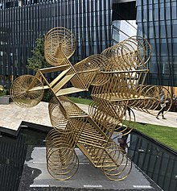

AI WEI WEI - Artista Chino
Ai Weiwei (en chino, 艾未未; pinyin, Ài Wèiwèi; Pekín, 28 de agosto de 1957) es un activista y artista contemporáneo chino.12 Ai colaboró con los arquitectos suizos Herzog & de Meuron como asesor artístico en el Estadio Nacional de Pekín para los Juegos Olímpicos de 2008.3 Como activista, ha criticado constantemente al gobierno chino por su postura respecto a la democracia y los derechos humanos. También ha investigado corrupción gubernamental y encubrimientos en China, particularmente el caso del derrumbe de escuelas en Sichuan tras el terremoto de 2008.4 El 3 de abril de 2011 fue detenido en el aeropuerto internacional de Pekín, estuvo bajo arresto durante 81 días sin cargos oficiales, y funcionarios aludieron todo a "delitos económicos".
Escultura Para siempre (2018)
Trabajo Artístico
El arte visual de Ai Weiwei incluye instalaciones escultóricas, carpintería, vídeo y fotografía. "Ai Weiwei: According to What" adaptado y ampliado por el Museo Hirshhorn y Jardín de Esculturas a partir de una exposición de 2009 en el Museo de Arte de Tokio Mori, fue el primer museo de América del Norte en realizar una retrospectiva de Ai.102 Se abrió en Hirshhorn en Washington D. C., en 2013 y posteriormente viajó a Brooklyn Museum, Nueva York103 y otros dos lugares. Trabajos más recientes abordan su investigación sobre las secuelas del terremoto de Sichuan y las respuestas a su detención por parte del gobierno chino.104 En 2018 estrenó su escultura Para siempre, una exhibición permanente en el jardín del centro comercial de lujo Artz Pedregal en la Ciudad de México.
Primeros años
Primeros años y trabajo Ai Weiwei es hijo del poeta chino Ai Qing,6 denunciado durante el Movimiento Anti-Derechista. En 1958, la familia fue enviada a un campo de trabajo en Beidahuang, Heilongjiang, cuando Ai Weiwei tenía un año de edad. Posteriormente fueron exiliados a Shihezi, Xinjiang en 1961, donde vivió durante 16 años. Tras la muerte de Mao Zedong y el fin de la Revolución Cultural, la familia regresó a Pekín en 1976.7 En 1978, Ai se matriculó en la Academia de Cine de Pekín y estudió animación.8 En 1978, fue uno de los fundadores del grupo vanguardista “Stars” con influencias avant garde, junto a Ma Desheng, Wang Keping, Mao Lizi, Huang Rui, Li Shuang, Zhong Acheng y Qu Leilei. El grupo se disolvió en 1983,9 sin embargo Ai participó regularmente en las exhibiciones realizadas por el grupo, como The Stars: Ten Years en 1989 (Hanart Gallery, Hong Kong y Taipéi) y una exposición retrospectiva en Pekín en 2007: Origin Point (hoy Museo de Arte de Pekín). En 2014, Ai Weiwei realizó una instalación llamada Illumination situada en un antiguo hospital de prisión, con la intención de verse y sentirse como en una película de terror. Para este trabajo, Ai instaló grabaciones de tibetano y cantos nativos estadounidenses en dos salas de evaluación psiquiátrica, cámaras de baldosas creadas para la observación de pacientes con enfermedades mentales. Los ruidos, espirituales, fuertes y culturalmente significativos, contrastan con las paredes de color menta brillante. El sentido clínico y de conciencia es sorprendente, brinda la sensación de presencia a un lugar que, cuando estaba abierto, era destinado a someter al humano. Inquietante y estéticamente agradable, la exhibición expone temas como la libertad de expresión y los derechos humanos mediante la creación de una posibilidad artística dentro y alrededor de un sistema que no funciona. Dar voz a disidentes silenciados, provocó nuevos simpatizantes al tema.
Música
El 24 de octubre de 2012, Ai realizó un cover de Gangnam Style,120 el famoso fenómeno de K-pop del rapero PSY originario de Corea del Sur, la canción fue publicada en Youtube con una duración de cuatro minutos. El video fue una crítica al intento por parte del gobierno chino para silenciar su activismo; fue bloqueado rápidamente por las autoridades nacionales. El 22 de mayo de 2013, Ai Weiwei debutó con su primer sencillo Dumbass en internet, con un video musical del cineasta Christopher Doyle. El video era una reconstrucción de la experiencia de Ai Weiwei en prisión, durante su detención de 81 días, sumergiéndose dentro y fuera de la realidad de la prisión, incluyendo fantasías de los soldados que custodiaban.121 Más tarde se dio a conocer un segundo sencillo, Laoma Tihua, el 20 de junio de 2013 junto con un vídeo basado en su experiencia en vigilancia estatal, con imágenes compiladas de documentales de su estudio.122 El 22 de junio de 2013, en el segundo aniversario de la liberación de Ai, lanzó su primer álbum The Divine Comedy.123 En agosto, se dio a conocer un tercer video musical de la canción Chaoyang Park, también incluido en el álbum.